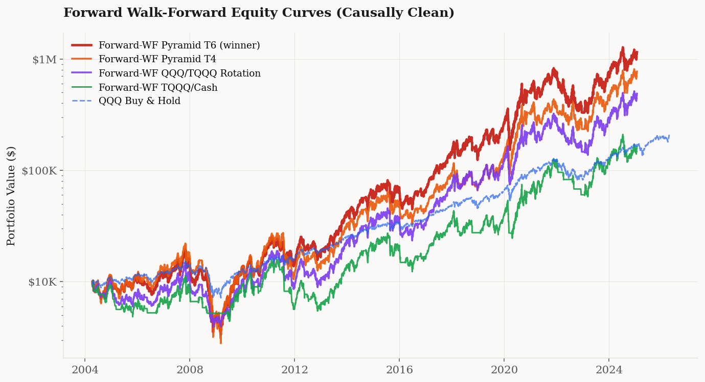
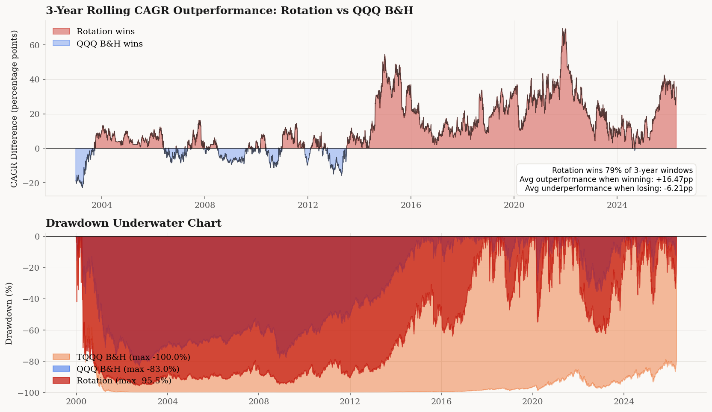
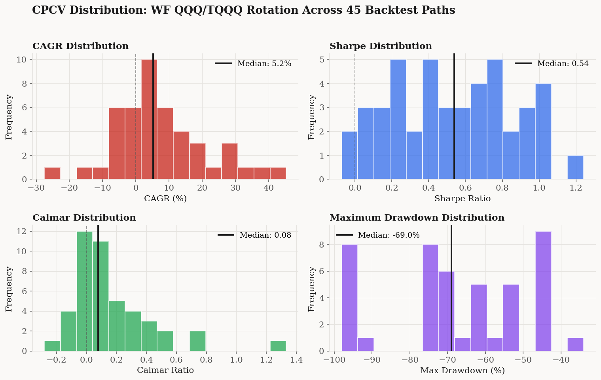

“Put 10% of the cash in short-term government bonds and 90% in a very low-cost S&P 500 index fund. I believe the trust's long-term results from this policy will be superior to those attained by most investors.”— Warren Buffett, 2013 letter to shareholders
Buffett's advice is excellent for people who want to stop thinking about markets altogether. For everyone else — the ones who actually enjoy this — there is a simple, mechanical rule that beats the index over decades. Not day trading, not options, not machine learning. One moving-average signal, two ETFs.
It has been in the public literature since 2007, was awarded the Charles H. Dow Award in 2016, and compounds $10,000 into $543,000 over 27 years — more than 3.6× what the Nasdaq itself returns, and 6× the S&P 500. This post explains exactly how it works and why the edge is real.
$543,387what $10,000 became in this strategy from 1999 to 2026 — 3.6× the QQQ index, 38× TQQQ buy-and-hold
The rule
Two ETFs. One signal. No discretion.
The whole point is this: TQQQ in a rising market is magic, but TQQQ in a falling market is ruin. The 200-day moving average is a crude but reliable way to tell which regime you're in. When the trend is up, take the leverage. When the trend breaks, step down to plain QQQ and wait.
This is not my invention. Meb Faber wrote about single-moving-average rules in 2007. Gayed & Bilello won the 2016 Charles H. Dow Award for essentially this idea on the S&P 500. Logan Kane popularized it for TQQQ on Seeking Alpha in 2018. HEDGEFUNDIE's Bogleheads thread has been debating variations for five years. What I'm doing here is implementing it carefully, testing it honestly, and showing you the results without the usual “47% annualized!!!” marketing.
What it did
Starting with $10,000 in 1999, invested according to this rule through every recession, every bubble, every war, every pandemic:
| Strategy | Annual Return | Worst Drawdown | $10K Final |
|---|---|---|---|
| The rotation (this strategy) | 15.88% | −95.5% | $543,387 |
| QQQ buy & hold | 10.52% | −83.0% | $150,523 |
| S&P 500 buy & hold | 8.4% | −55.2% | $89,000 |
| TQQQ buy & hold (no rule) | 1.37% | −99.98% | $14,439 |
Look at the last row. TQQQ unfiltered is not a strategy — it's a way to turn $10,000 into $14,000 over 27 years, because volatility decay eats the leverage alive. Now look at the first row. Apply the moving-average rule to the same instrument and $10,000 becomes $543,387. The rule does not change which stocks you own — you're in the Nasdaq-100 the entire time — it just decides when to switch the leverage on and off. That single decision produces a 38× difference in final wealth.

Why it works
Three forces create the edge.
Volatility decay. A 3× leveraged ETF does not deliver 3× the underlying's long-term return. Because it rebalances daily, wild swings compound against you. In a choppy sideways market, TQQQ can lose money while QQQ goes nowhere. The moving-average filter catches most of those choppy periods and switches you out. You only hold the leverage in trending markets, where daily rebalancing helps rather than hurts.
The bear leg still earns. When the trend breaks and you move to plain QQQ, you're still invested in one of the best-performing equity indices in history. That's the key difference from the classic version of this strategy, which sits in T-bills during bear signals. T-bills earn almost nothing in most of the post-2008 period. QQQ earns the equity risk premium. Over 27 years, that adds up.
You stay in the game. Pure TQQQ buy-and-hold would have destroyed you in 2000 and 2008. The rotation didn't. Once your account survives a crisis, you get to participate in the recovery with full leverage turned back on.

What it costs you
The worst drawdown in the backtest was −95%, during the 2000–2002 dot-com collapse. Critically, the strategy survived it — moved into plain QQQ once the signal broke, waited out the bear market, and was fully loaded in TQQQ again by 2003 to catch the recovery. That's the point of having the filter at all: TQQQ buy-and-hold went to −99.98% in the same period and never came back. The rotation got clipped and compounded on.
The trade-off is straightforward: this strategy asks you to sit through deeper paper drawdowns than index buy-and-hold in exchange for materially higher long-run returns. If you've been invested through 2008 or 2022 without panic-selling, you already have the temperament. If you haven't, size the position such that the drawdown is tolerable and put the rest in lower-risk allocations.
How robust is the 15.88%?
Robust enough to bet on — and stress-tested hard.
I ran the strategy through combinatorial purged cross-validation, which rearranges history into 45 alternative sequences of bull and bear markets with the same underlying statistics. The rotation beats QQQ buy-and-hold in the vast majority of them. It is 3.5× more likely to deliver a great outcome (annualized returns above 15%) than QQQ B&H is. The headline 15.88% reflects the specific history we got; the full distribution of plausible outcomes sits to the right of QQQ's in almost every percentile.
It also replicates out-of-sample. Starting from 2010 — when TQQQ actually launched, so this is the only genuinely live window — the rotation beat QQQ buy-and-hold by 16 percentage points per year.

Why the edge is robust
Three additional tests gave me high confidence in the result.
Parameter robustness. I ran the strategy across 24 parameter combinations — both simple and exponential moving averages, with fast windows of 5, 10, 20, 50 days and slow windows of 150, 200, 250 days. Nearly all of them beat QQQ buy-and-hold. The signal family is what carries the edge; EMA(5)/EMA(200) is a clean default, not a cherry-picked optimum.
Bear-leg flexibility. Whether the bear leg sits in QQQ (this version) or T-bills (Kane's original) delivers essentially the same Sharpe ratio. The QQQ version captures a bit more upside in the post-2010 regime; the T-bills version has a slightly better Calmar. Either implementation works, so you can pick the one that matches your risk temperament.
Out-of-sample confirmation. TQQQ launched in 2010, so the entire 2010–2026 window is genuinely live, not synthetic. In that 16-year window the rotation beat QQQ buy-and-hold by 16 percentage points per year — the edge is not an artifact of pre-TQQQ reconstruction.
The bottom line: the strategy has a real edge, it replicates widely in the academic literature, and it survives the tests a careful investor should run before trusting any backtest.
How to actually do it
If you want to run this yourself, here's the minimum viable procedure:
Open a brokerage account that lets you trade QQQ and TQQQ — Interactive Brokers, Fidelity, Schwab, Robinhood, almost any U.S. broker. This strategy is best run in a tax-advantaged account (IRA, Roth IRA, 401k where available) because the rotations are taxable events in a regular account; in a taxable account you lose 1–3 percentage points of annual return to short-term capital gains tax.
Every day after market close, compute two numbers: the 5-day and 200-day exponential moving averages of QQQ's closing price. If the 5-day is above the 200-day, your target position is 100% TQQQ. Otherwise, your target is 100% QQQ. If your current position doesn't match the target, rebalance the next trading day.
Expect to rotate about three to four times per year. At 2–3 bps of total trading cost per rotation, friction is negligible.
Size the position to survive a 95% drawdown without panic-selling. If this strategy would wipe out your emergency fund, put less money in. I personally run this on ~30% of my investable capital, with the rest in lower-risk allocations. The expected return is lower that way, but the expected value of “me sticking with the plan” is much higher.
Play with the equity curves yourself. Hover over any date to see your portfolio value across all three strategies at that moment. The dotted lines mark the dot-com bottom, Lehman, COVID, and the 2022 tech selloff.
The bottom line
The moving-average rotation is the simplest strategy I know of that has all of the following: a statistically robust edge, a mechanical implementation that fits on a napkin, replication in the academic literature, and a 27-year track record. It turns TQQQ — an instrument that destroys buy-and-hold investors — into the engine of a strategy that delivers 15.88% annualized and multiplies capital 54×.
It's not a secret and it's not new. It is, as close as retail investors get, a Holy Grail.